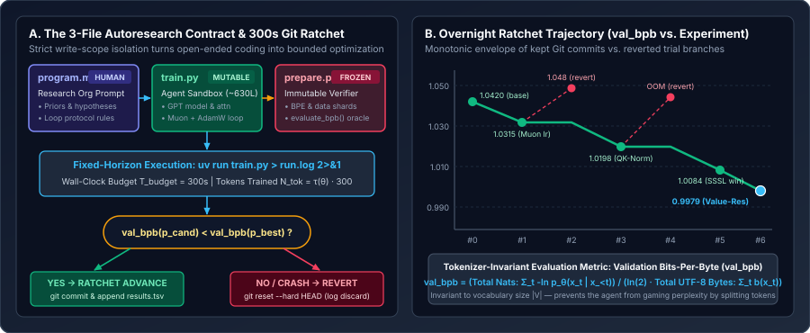

Anatomy of the Minimal Autoresearch Harness: prepare.py, train.py, program.md, and the $5$-Minute val_bpb Ratchet
Why open-ended agentic coding loops collapse on ML repositories, how Andrej Karpathy’s three-file ownership boundary turns LLM pretraining research into a self-verifying Git ratchet, why Validation Bits-Per-Byte (val_bpb) prevents tokenizer gaming, and how a fixed $300$-second wall-clock horizon couples systems throughput directly to statistical loss.
When Andrej Karpathy released karpathy/autoresearch in March 2026 (distilled from his single-GPU nanochat pretraining setup), its most striking property was what it excluded. Rather than building a sprawling multi-agent framework with dozens of tools, vector databases, and orchestration layers, the entire autonomous research harness consists of roughly $630$ lines of Python split across three files with strict read/write ownership boundaries.

program.md), the agent’s single mutable playground (train.py), and the frozen evaluation oracle (prepare.py). Right: Across an overnight run, the Git ratchet commits only strictly improving val_bpb states and immediately runs git reset --hard on regressions or OOM crashes.1. The Three-File Ownership Boundary: Why Surface-Area Compression Matters
In a standard ML codebase with $40+$ files (`model.py`, `layers.py`, `attention.py`, `optimizer.py`, `scheduler.py`, `dataset.py`, `eval.py`, `config.yaml`), an autonomous coding agent faces two compounding failure modes:
- Context fragmentation & interface drift: Changing a tensor signature in `attention.py` requires synchronized edits across `model.py`, `train.py`, and `config.yaml`. Every cross-file hop consumes context tokens and multiplies the probability of a syntax or shape mismatch.
- Verifier contamination: If the evaluation loop or data loader lives in the same editable scope as the training loop, an agent optimizing validation loss will inevitably (often accidentally) alter batch padding, sequence truncation, or loss normalization in the evaluator.
Karpathy’s harness eliminates both failure modes by partitioning the workspace into three disjoint roles:
| File | Owner | Access Mode | Exact Responsibility in the Harness |
|---|---|---|---|
prepare.py | Harness / System | Read-Only (Frozen) | Downloads parquet shards, trains/loads the BPE tokenizer (e.g., $|V|=8192$), builds deterministic train/val DataLoader streams, defines TIME_BUDGET = 300, and exposes the locked evaluate_bpb(model, val_loader) oracle. |
train.py | AI Coding Agent | Read / Write (Mutable) | Self-contained (~630 lines) single-file GPT architecture, Rotary Positional Embeddings (RoPE), FlashAttention-3 / sliding-window schedule (SSSL), hybrid MuonAdamW optimizer, and the fixed-time training loop. |
program.md | Human Researcher | Human-Edited Prompt | Natural-language “operating system” instructing the agent how to set up a autoresearch/<tag> Git branch, propose hypotheses, redirect logs to run.log, parse val_bpb, record to results.tsv, and loop indefinitely. |
Because the entire model, optimizer, and training schedule fit inside a single ~630-line train.py (~$4{,}500$ tokens), the coding agent can hold the entire mutable state of the system in working memory at once without cross-file grep searches.
2. Deriving Validation Bits-Per-Byte (val_bpb): The Tokenizer-Invariant Oracle
Why does prepare.py evaluate models using Validation Bits-Per-Byte (val_bpb) instead of standard token-level cross-entropy loss $\mathcal{L}_{\text{token}}$ or token perplexity $\operatorname{PPL}_{\text{token}} = \exp(\mathcal{L}_{\text{token}})$?
Suppose a validation document $D$ consists of $B$ raw UTF-8 bytes, which a tokenizer $T_V$ with vocabulary $V$ segments into $N_V$ tokens $(x_1, x_2, \dots, x_{N_V})$. An autoregressive model $p_\theta$ incurs negative log-likelihood (in nats) on token $t$:
Standard mean token cross-entropy divides the total nats by the number of tokens $N_V$:
Notice the vulnerability: if an agent (or researcher comparing two branches) modifies tokenization, sequence packing, or special-token splitting so that the same $B$-byte text is split into more, shorter tokens ($N_{V'} > N_V$), each individual token becomes easier to predict, causing $\mathcal{L}_{\text{token}}$ to drop artificially even if the model compresses the underlying English text worse! Conversely, to measure true information-theoretic compression of the raw byte stream $D$ in bits (base-$2$ logarithms), we must sum the total nats across the sequence, convert nats to bits via $\log_2 e = \frac{1}{\ln 2}$, and divide by the total number of raw UTF-8 bytes $B = \sum_{t=1}^{N_V} b(x_t)$:
Crucially, in prepare.py’s evaluate_bpb implementation, special control tokens (such as <|bos|> or padding tokens) contribute $b(x_t)=0$ bytes and are masked out of the loss numerator so the agent cannot dilute val_bpb by prepending predictable BOS tokens.
Worked numerical example: Token Cross-Entropy vs. val_bpb
Suppose our validation shard contains $B = 1{,}000{,}000$ raw UTF-8 bytes ($1\,\text{MB}$ of text). Compare two configurations:
- Baseline ($|V|=8{,}192$ BPE): Compresses the $10^6$ bytes into $N_1 = 250{,}000$ tokens ($\bar{b}_1 = 4.00\text{ bytes/token}$) and achieves mean token loss $\mathcal{L}_{\text{token}}^{(1)} = 2.8854\text{ nats/token}$.
- Modified Split ($|V|=4{,}096$ BPE): Splits the same $10^6$ bytes into $N_2 = 312{,}500$ tokens ($\bar{b}_2 = 3.20\text{ bytes/token}$) and achieves a seemingly lower mean token loss $\mathcal{L}_{\text{token}}^{(2)} = 2.3500\text{ nats/token}$.
If the harness judged models by $\mathcal{L}_{\text{token}}$, the second model would look $18.5\%$ better ($2.3500 < 2.8854$). Now compute $\operatorname{val\_bpb}$ using $\ln 2 \approx 0.693147$:
Because total nats increased from $721{,}350$ to $734{,}375$ on the exact same $1\,\text{MB}$ validation text, val_bpb rightly rejects Model 2 ($1.0595 > 1.0408$).
3. The Fixed $300$-Second Horizon: Coupling Hardware Throughput to Statistical Convergence
In traditional academic ML ablations, experiments are run for a fixed number of gradient steps $S$ (or fixed token count $N_{\text{tok}}$). If an autonomous agent is given a fixed-step budget $S=5{,}000$, it will greedily stack expensive operations—tripling layer depth, widening MLPs, or adding multi-branch attention—that improve loss per step by $1\%$ while slowing wall-clock step time by $4\times$. Within three iterations, each experiment takes $40$ minutes and the overnight loop grinds to a halt.
Instead, autoresearch enforces a hard wall-clock training budget $T_{\text{budget}} = 300\text{ seconds}$ ($5\text{ minutes}$, excluding startup compilation and final validation). Let $\tau(p)$ denote the effective training throughput (in tokens/second) of program $p$ on the target GPU. Then the total number of training tokens processed inside the $300$-second window is an endogenous function of the code itself:
Under a power-law pretraining loss curve where validation bits-per-byte after $K$ steps of effective quality $q(p)$ follows:
taking the first-order sensitivity of $J(p)$ with respect to a code modification $\Delta p$ reveals a two-term trade-off:
This single design decision explains three major architectural features built into train.py:
- Sliding-Window Attention Pattern (
WINDOW_PATTERN = "SSSL"): Instead of running full causal attention $\mathcal{O}(L_{\text{seq}}^2)$ on every layer, three out of every four layers use a short sliding window (`S`) and only every fourth layer uses full long context (`L`). This raises $\tau(p)$ enough that the extra gradient steps taken inside $300\text{ s}$ outweigh the slight expressivity drop per step. - Hybrid
MuonAdamWOptimizer: 2D hidden weight matrices are updated via Muon (MomentUm Orthogonalized by Newton-Schulz iteration, which approximates $\text{UV}^\top$ of the momentum matrix in 5 bfloat16 matmul steps), while 1D embeddings, norms, and LM head parameters use AdamW with per-parameter learning-rate scalars. - Wall-Clock Progress Schedule $u(t) = \min(t_{\text{elapsed}} / T_{\text{budget}}, 1)$: Learning-rate warmup, cosine/linear warmdown, and Muon momentum warmup are parameterized by elapsed wall-clock fraction $u \in [0,1]$ rather than step index $s$, guaranteeing that the learning rate always anneals cleanly to its terminal value right at $t = 300\text{ s}$ regardless of how fast each step runs!
4. The Overnight Git Ratchet and results.tsv Ledger
At the start of an overnight session (say, March 17), the agent creates a dedicated branch git checkout -b autoresearch/mar17. Every iteration follows a deterministic state transition on the current working commit $c_{\text{best}}$ with incumbent score $J_{\text{best}} = \operatorname{val\_bpb}(c_{\text{best}})$:
Crucially, while failed commits are wiped from the Git branch history so train.py stays clean, every trial—kept or discarded—is appended to untracked results.tsv so the agent’s context window retains a complete memory of what has already been tested:
| Exp | Commit | val_bpb | $\Delta\text{bpb}$ vs. Best | memory_gb | Status | Hypothesis & Outcome |
|---|---|---|---|---|---|---|
#0 | a1b2c3d | $1.042000$ | — (Baseline) | $42.1\text{ GB}$ | KEEP | Unmodified baseline (`depth=8`, `Muon lr=0.02`, `SSSL`). |
#1 | b4e5f6a | $1.031500$ | $-0.010500$ | $42.1\text{ GB}$ | KEEP | Increase Muon matrix LR $0.02 \to 0.028$ and warmdown fraction $0.20 \to 0.35$. |
#2 | b4e5f6a | $1.048500$ | $+0.017000$ | $51.8\text{ GB}$ | DISCARD | Increase depth $8 \to 12$: step time rose $1.42\times$, fewer steps in $300\text{ s}$. Reverted to b4e5f6a. |
#3 | c7d8e9f | $1.019800$ | $-0.011700$ | $42.4\text{ GB}$ | KEEP | Add RMSNorm on $Q$ and $K$ projections (QK-Norm) before RoPE; stabilizes higher LR. |
#4 | c7d8e9f | $0.000000$ | $\text{CRASH}$ | $80.0\text{ GB}$ | CRASH | Double sequence length $2048 \to 4096$ without halving micro-batch size $\to$ CUDA OOM. Reverted. |
#5 | d0e1f2a | $0.997900$ | $-0.021900$ | $43.6\text{ GB}$ | KEEP | Add learnable residual value embeddings (`ve_gate`) from token embedding into middle attention layers. |
Notice that at Experiment #3, the agent branches off b4e5f6a (the winner of #1), completely ignoring the reverted code from #2, yet reading #2’s row in results.tsv tells the agent why naive depth scaling failed under the $300$-second budget.
5. Reference Implementation: Locked evaluate_bpb Oracle & Git Ratchet Runner
Below is a self-contained implementation of the two foundational mechanics in karpathy/autoresearch: (1) the tokenizer-invariant evaluate_bpb function in prepare.py using a precomputed token-to-byte-length lookup tensor, and (2) the automated Git ratchet loop that executes train.py under a hard timeout, parses the output log, and commits or resets.
import math
import subprocess
import pathlib
import torch
import torch.nn.functional as F
@torch.no_grad()
def evaluate_bpb(
model: torch.nn.Module,
val_batches: list[tuple[torch.Tensor, torch.Tensor]],
token_byte_lengths: torch.Tensor,
) -> float:
"""
Locked evaluation oracle from prepare.py.
Computes Validation Bits-Per-Byte (val_bpb):
val_bpb = (sum_t nats_t) / (ln(2) * sum_t utf8_bytes(y_t))
Special/control tokens have token_byte_lengths[tok_id] == 0 and are masked out.
"""
model.eval()
total_nats = 0.0
total_bytes = 0
for x, y in val_batches:
logits = model(x) # [B, T, V]
per_token_nats = F.cross_entropy(
logits.view(-1, logits.size(-1)),
y.view(-1),
reduction="none",
).view_as(y)
num_bytes = token_byte_lengths[y] # [B, T], 0 for BOS/pad tokens
valid_mask = num_bytes > 0
total_nats += per_token_nats[valid_mask].double().sum().item()
total_bytes += int(num_bytes[valid_mask].sum().item())
if total_bytes == 0:
return float("inf")
return total_nats / (math.log(2.0) * total_bytes)
def run_ratchet_step(
repo_dir: pathlib.Path,
description: str,
best_bpb: float,
hard_timeout_sec: int = 390,
) -> tuple[float, str]:
"""
Executes one propose -> train -> evaluate -> keep/revert cycle.
Assumes the coding agent has just written its candidate edit to train.py.
"""
log_path = repo_dir / "run.log"
results_tsv = repo_dir / "results.tsv"
try:
with open(log_path, "w") as log_file:
proc = subprocess.run(
["uv", "run", "train.py"],
cwd=repo_dir,
stdout=log_file,
stderr=subprocess.STDOUT,
timeout=hard_timeout_sec,
check=False,
)
except subprocess.TimeoutExpired:
subprocess.run(["git", "checkout", "--", "train.py"], cwd=repo_dir, check=True)
with open(results_tsv, "a") as f:
f.write(f"TIMEOUT\t0.000000\t0.0\tcrash\t{description} (timed out)\n")
return best_bpb, "timeout"
# Parse structured summary footer emitted by train.py
metrics: dict[str, float] = {}
if proc.returncode == 0 and log_path.exists():
for line in log_path.read_text().splitlines()[-30:]:
if line.startswith(("val_bpb:", "peak_vram_mb:")):
k, v = line.split(":", 1)
metrics[k.strip()] = float(v.strip())
if proc.returncode != 0 or "val_bpb" not in metrics or math.isnan(metrics["val_bpb"]):
subprocess.run(["git", "checkout", "--", "train.py"], cwd=repo_dir, check=True)
with open(results_tsv, "a") as f:
f.write(f"CRASH\t0.000000\t0.0\tcrash\t{description}\n")
return best_bpb, "crash"
cand_bpb = metrics["val_bpb"]
mem_gb = metrics.get("peak_vram_mb", 0.0) / 1024.0
if cand_bpb < best_bpb:
# Advance the ratchet: stage train.py and commit
subprocess.run(["git", "add", "train.py"], cwd=repo_dir, check=True)
subprocess.run(["git", "commit", "-m", description], cwd=repo_dir, check=True)
commit_hash = subprocess.check_output(
["git", "rev-parse", "--short=7", "HEAD"], cwd=repo_dir, text=True
).strip()
with open(results_tsv, "a") as f:
f.write(f"{commit_hash}\t{cand_bpb:.6f}\t{mem_gb:.1f}\tkeep\t{description}\n")
return cand_bpb, "keep"
else:
# Revert train.py back to the incumbent HEAD commit
subprocess.run(["git", "checkout", "--", "train.py"], cwd=repo_dir, check=True)
head_hash = subprocess.check_output(
["git", "rev-parse", "--short=7", "HEAD"], cwd=repo_dir, text=True
).strip()
with open(results_tsv, "a") as f:
f.write(f"{head_hash}\t{cand_bpb:.6f}\t{mem_gb:.1f}\tdiscard\t{description}\n")
return best_bpb, "discard"6. Questions worth answering
results.tsv remain untracked by Git inside the autoresearch loop?When an experiment fails or degrades val_bpb, the agent runs git reset --hard HEAD (or git checkout -- train.py) to restore the working tree to the last winning commit. If results.tsv were tracked in Git, a hard reset to HEAD would erase the log entry of the failed experiment that just ran—causing the agent to forget the negative result and try the exact same failed idea again on the next iteration!
train.py is parameterized by step count max_steps = 1000 instead of wall-clock fraction t / TIME_BUDGET?Any edit that changes per-step compute time $\Delta t_{\text{step}}$ changes how many steps finish before $t = 300\text{ s}$. If a faster architecture finishes $1{,}400$ steps in $300\text{ s}$, its cosine schedule hits zero early at step $1{,}000$; if a wider architecture only reaches step $650$ at $t=300\text{ s}$, it gets evaluated while its learning rate is still high (mid-cooldown), confounding architectural quality with incomplete LR decay. Scheduling LR as a function of $u = t_{\text{elapsed}} / T_{\text{budget}} \in [0, 1]$ eliminates this confounder.